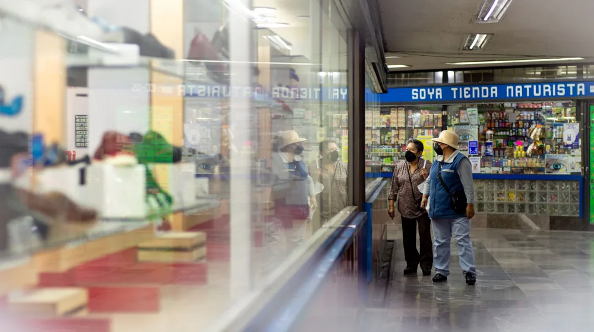

면세점 쇼핑 한도, 놓치면 세금 폭탄! 똑똑한 세관 신고 가이드
사진: Federico Abis / Pexels (무료 이미지, 출처 표기)
해외여행의 꽃, 면세점 쇼핑! 하지만 무턱대고 담다가는 귀국길에 '세금 폭탄'을 맞을 수도 있습니다. 2026년 8월 기준으로 면세 한도는 얼마이며, 초과 시 어떤 절차를 거쳐야 하는지 정확히 알아두는 것이 중요합니다. 이 글에서는 면세점 쇼핑 한도와 현명한 세관 신고 방법을 상세히 안내하여 여러분의 해외여행을 더욱 즐겁게 만들어 드립니다.

면세점에서 원하는 물품을 마음껏 구매하고 싶지만, 복잡한 세관 규정 때문에 망설이는 경우가 많습니다. 어떤 물품이 얼마까지 면세 대상이 되는지, 한도를 초과하면 세금이 얼마나 부과되는지 미리 파악하면 불필요한 지출을 막을 수 있습니다.
면세점 쇼핑, 얼마까지 살 수 있을까? (기본 면세 한도)
대한민국 국민이 해외여행 후 입국할 때 적용되는 기본 면세 한도는 미화 800달러입니다. 이 금액은 면세점에서 구매한 물품뿐만 아니라 해외 현지에서 구매한 모든 물품을 합산한 금액 기준입니다.
특히 농림축산물 및 한약재는 기본 면세 한도와 별도로 미화 100달러까지 면세됩니다. 다만, 농림축산물은 검역 대상이 될 수 있으므로, 반입 전 관련 규정을 확인하는 것이 중요합니다.
이 기준은 관세청에 따라 변동될 수 있으므로, 2026년 8월 기준으로 최신 정보는 관세청 홈페이지를 참고하는 것이 좋습니다.
술, 담배, 향수는 별도 한도 적용 (품목별 면세 한도)
일부 품목은 기본 면세 한도와 별개로 추가적인 면세 한도가 적용됩니다. 이 품목들은 일반 면세 한도 $800과 별개로 적용되지만, 각 품목의 제한을 넘어서면 해당 초과분에 대해 과세 대상이 됩니다.
- 주류: 2병 (총 2리터 이내, 미화 400달러 이하)
- 담배: 궐련 200개비, 엽궐련 50개비, 그 밖의 담배 250g 중 1종
- 향수: 100ml 이하
예를 들어, $800 상당의 의류와 $300 상당의 주류 1병을 구매했다면, 의류는 기본 면세 한도 내에 있고 주류는 품목별 한도 내에 있어 모두 면세 혜택을 받을 수 있습니다.
면세 한도 초과 시 세금은 어떻게 계산될까?
면세 한도를 초과하는 물품에 대해서는 관세, 부가가치세 등이 부과됩니다. 과세 표준은 구매 가격을 기준으로 하며, 품목에 따라 세율이 달라집니다. 일반적으로는 간이세율 20%가 적용되지만, 일부 고가 품목(예: 시계, 보석류)에는 더 높은 세율이 적용될 수 있습니다.
정확한 세금 계산은 관세법 시행규칙에 따르며, 관세청 '예상 세액 조회' 서비스를 활용하면 미리 계산해 볼 수 있습니다. 이 서비스는 품목과 금액을 입력하면 대략적인 예상 세액을 알려주어 귀국 전 계획을 세우는 데 도움을 줍니다.
똑똑하게 세관 신고하는 방법과 꿀팁
면세 한도를 초과하는 물품이 있다면 자진해서 신고하는 것이 현명한 방법입니다. 관세청에 따르면, 자진 신고 시 여러 혜택을 받을 수 있습니다.
자진 신고 혜택
면세 한도를 초과했을 경우, 입국 시 자진해서 신고하면 산출 세액의 30% (최대 20만 원)를 감면받을 수 있습니다. 이는 미신고 적발 시 부과되는 가산세와 비교했을 때 상당한 이득입니다.
모바일 신고 활용
입국 전 '모바일 세관신고' 앱을 통해 미리 신고서를 작성하고 제출하면 편리하고 빠르게 통관할 수 있습니다. 비행기나 선박에서 도착하기 전에 미리 신고를 완료하면 입국장에서 시간을 절약할 수 있습니다.
면세점에서 구매한 영수증은 반드시 보관하고, 해외 현지에서 구매한 물품도 합산하여 정확하게 신고해야 합니다. 영수증은 물품 가격을 증빙하는 중요한 자료가 됩니다.
면세 쇼핑 시 꼭 알아야 할 주의사항
면세 쇼핑을 즐기기 전에 몇 가지 주의사항을 숙지하면 불이익을 피할 수 있습니다. 아래 표에서 면세 한도 요약과 함께 중요한 주의사항을 확인하세요.
미신고 시 가산세 부과
면세 한도를 초과하고도 신고하지 않았다가 적발되면, 납부할 세액의 40% (반복적인 미신고 시 60%)가 가산세로 부과됩니다. 이는 자진 신고 시 감면 혜택과 비교하면 훨씬 큰 부담이 될 수 있습니다.
동반가족 합산 불가
가족이 함께 여행해도 면세 한도는 개인별로 적용됩니다. 예를 들어, 부부가 총 $1,600 상당의 물품을 구매했다 해도, 한 사람이 $1,000을 구매하고 다른 사람이 $600을 구매했다면 $1,000을 구매한 사람에게 초과분에 대한 세금이 부과됩니다. 물품 구매 시 개인별 한도를 고려하는 것이 중요합니다.
해외 현지 구매품도 합산
면세점에서 구매한 물품뿐만 아니라, 해외 현지 일반 상점에서 구매한 물품도 모두 합산하여 $800의 개인 면세 한도에 포함됩니다. 따라서 모든 해외 구매 내역을 꼼꼼히 관리해야 합니다.
정확한 사항은 관세청 공식 홈페이지나 해당 기관에서 다시 확인하시길 권장합니다. 특히 면세 규정은 정부 정책에 따라 변경될 수 있으므로, 최신 정보를 확인하는 습관을 들이는 것이 좋습니다.
🔗 이 글도 함께 보면 좋아요: 예금자보호 5천만원? 초과 금액 안전하게 지키는 분산예치 전략
관련 추천 상품
이 포스팅은 쿠팡 파트너스 활동의 일환으로, 이에 따른 일정액의 수수료를 제공받습니다.